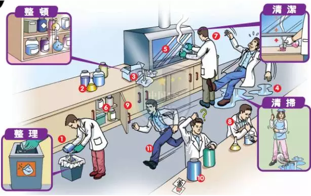
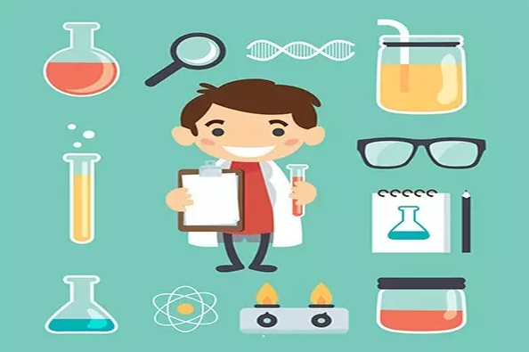

实验室安全，需重点关注这几大类别
实验室防火安全、实验室化学药品安全、实验室生物安全、实验室防辐射安全、大型仪器设备安全、实验技术安全、实验室网络安全，请随小析姐细细看来。。。
实验室防火安全

1.实验室内必须存放一定数量的消防器材，消防器材必须放置在便于取用的明显位置，指定专人管理，全体人员要爱护消防器材，并且按要求定期检查更换。
2.实验室内存放的一切易燃、易爆物品（如，氢气、氮气、氧气等）必须与火源、电源保持一定距离，不得随意堆放。使用和储存易燃、易爆物品的实验室，严禁烟火。
3.不得乱接乱拉电线，不得超负荷用电，实验室内不得有裸露的电线头，严禁用金属丝代替保险丝；电源开关箱内不得堆放物品。
4.电器设备和线路、插头插座应经常检查，保持完好状态，发现可能引起火花、短路、发热和绝缘破损、老化等情况必须通知电工进行修理。电加热器、电烤箱等设备应做到人走电断。
5.使用电烙铁，要放在非燃隔热的支架上，周围不应堆放可燃物，用后立即拨下电源插头。
6.可燃性气体钢瓶与助燃气体钢瓶不得混合放置，各种钢瓶不得靠近热源、明火，要有防晒措施，禁止碰撞与敲击，保持油漆标志完好，专瓶专用。使用的可燃性气瓶，一般应放置室外阴凉和空气流通的地方，用管道通入室内，氢、氧和乙炔不能混放一处，要与使用的火源保持10m以上的距离。所有钢瓶都必须有固定装置固定，以防倾倒
7.实验室内未经批准、备案，不得使用大功率用电设备，以免超出用电负荷。
8.严禁在楼内走廊上堆放物品，保证消防通畅通。
实验室化学药品安全
1.各级各类实验室所用化学药品的必须由学校统一组织购置，任何实验室和个人不得私自购置。购置剧毒类和易制毒类药品需经公安部门许可，持许可证方可购置。
2.化学药品要分类存放，相互作用的药品不能混放，必须隔离存放。所有药品都必须有明确的标签，贮存室和柜必须保持整齐清洁。有特殊性质的药品必须按其特性要求存放。无名物、变质过期的药品要及时清理销毁。实验室内不得存放剧毒类药品。
3.危险化学药品容器应有清晰的标识或标签。遇火、遇潮容易燃烧、爆炸或产生有毒气体的危险化学药品，不得在露天、潮湿、漏雨和低洼容易积水的地点存放；受阳光照射易燃烧、易爆炸或产生有毒气体的危险化学药品应当在阴凉通风地点存放。危险化学药品的存放区域应设置醒目的安全标志。
4.剧毒物品必须存放在学校专门的剧毒品库内，库房必须符合相关安全要求，必须做到“双人双锁”妥善保管。领用剧毒物品必须经学校保卫处批准，应根据使用情况领取最少数量，做到“双人”领取，“双人”使用，同时要做到并且做好使用登记和消耗记录，须严格按管理规定，做到“双人双锁”妥善保管。
5.从事危险化学药品实验的人员应当接受相应的安全技术培训，做到熟悉所使用药品的性质，熟练掌握相应药品的操作方法。特别是使用易燃易爆、剧毒、致病性以及有压力反应等危险性较大的危险化学药品做实验，严禁盲目操作，必须有相关的操作规程，并以国家和行业的相应规定为标准，严格执行。
6.各实验室产生的验废液废物不得随意丢弃，随意排入地面、地下管道以及任何水源，防止污染环境。实验废液废物要采取适当措施做“无害化”处理，确实无法处理的各实验室不得私自排放、处理，实验室应采用专用容器分类盛装、存放，防止渗漏、丢失造成二次污染。
7.各实验室将收集的各类废液、废物统一运送至实验室设备管理处下设的废物回收库，由实室室设备管理处联系环保局指定认可的具有处理资质的部门统一处置。
实验室生物安全
1.实验室生物安全涉及人类生存环境的安全，国家对生物安全的管理高度重视，各有关实验室也必须高度重视实验室生物安全，必须有效监控和预防实验室生物污染，要定期检查和自查，发现安全隐患要及时报告并处理解决。
2.实验室应当定期对工作人员进行培训，保证其掌握实验室技术规范、操作规程、生物安全防护知识和实际操作技能，并进行考核。工作人员经考核合格的，方可上岗。未经学习培训者，不得从事相关工作。
3.实验室安全管理人员要根据本实验室具体情况，制定实验室生物安全操作规程，并对进入实验室进行实验的学生进行进行生物安全知识教育和培训。
4.未经农业部或市农业局批准，不得擅自采集、运输、接收保存重大动物疫病病料，不得转让、赠送已初步认定为重大动物疫病或者已确诊为重大动物疫病的病料，不得私自将病料样本寄往国外或者携带出境。
5.生物类实验室废弃物（包括：动物残体等）应用专用容器收集，进行高温高压灭菌后处理。生物实验中的一次性手套及沾染EB致癌物质的物品应统一收集和处理，不得丢弃在普通垃圾箱内。
以下是病源微生物实验室生物安全管理：
6.国家根据病原微生物的传染性、感染后对个体或者群体的危害程度，将病原微生物分为四类：
第一类病原微生物，是指能够引起人类或者动物非常严重疾病的微生物，以及我国尚未发现或者已经宣布消灭的微生物。 第二类病原微生物，是指能够引起人类或者动物严重疾病，比较容易直接或者间接在人与人、动物与人、动物与动物间传播的微生物。第三类病原微生物，是指能够引起人类或者动物疾病，但一般情况下对人、动物或者环境不构成严重危害，传播风险有限，实验室感染后很少引起严重疾病，并且具备有效治疗和预防措施的微生物。 第四类病原微生物，是指在通常情况下不会引起人类或者动物疾病的微生物。（第一类、第二类病原微生物统称为高致病性病原微生物。）
7.国家根据实验室对病原微生物的生物安全防护水平，并依照实验室生物安全国家标准的规定，将病原微生物实验室分为一级、二级、三级和四级。一级、二级实验室不得从事高致病性病原微生物实验活动。新建、改建、扩建应报国家有关部门批准，经有关部门评估，确定实验室级别，取得相应的资格证书。
8.实验室应当建立病源微生物实验档案，记录实验室使用病源微生物情况和安全监督情况。实验室从事高致病性病原微生物相关实验活动的实验档案保存期不得少于20年。实验室建立并保留的实验档案应当如实记录与病源微生物安全相关的实验活动和设施、设备工作状态情况，以及实验活动产生的危险废物无害化处理、集中处置以及检验的情况。
9.从事病原微生物实验操作的场所、设备必须与所从事的病原微生物的生物安全级别相适应，以防止病原微生物的泄漏。实验室从事生物实验活动应当严格遵守有关国家标准和实验室技术规范、操作规程。
10.在开始相关工作之前，应对所从事的病原微生物及相关操作进行危险评估，根据国家对于各种微生物操作的危险等级划分和防护要求以及危险评估的结果，制定全面、细致的标准操作规程和程序文件，对于关键的危险步骤设计出可行的防护措施并对这些细节了然于胸。
11.实验室所需病源微生物样品不得随意采集和私自购买，样品的采集必须经有关部门批准后，且必须由具有掌握相关专业知识和操作技能的工作人员，在具有相应的防护措施的情况方可进行，并对样本的来源、采集过程和方法等作详细记录；如需购买必须报学校，由学校联系具有相关资质的经销商统一购买。
12.实验室对各种病源微生物要严格保存、保管，作好病原微生物菌(毒)种和样本进出和储存的记录,建立档案制度,并指定专人负责｡实验室内不得随意保存高致病性病原微生物菌(毒)种和样本。经上级主管理部门批准充许保存的高致病性病原微生物菌(毒)种和样本，应当设专库或者专柜单独储存。
13.实验室发生病原微生物泄漏时,实验室工作人员应当立即采取控制措施,防止病原微生物进一步扩散,对有关人员进行医学观察或者隔离治疗,封闭实验室,并同时向学校及上级部门报告｡
实验动物生物安全管理
14.我校执行国家实验动物使用许可证制度，实验动物的质量监控，执行国家标准；国家尚未制定标准的，执行行业标准；国家、行业均为制定标准的，执行地方标准。
15.实验动物分为四级：一级，普通动物；二级，清洁动物；三级，无特定病原体动物；四级，无菌动物。对不同等级的实验动物，应当按照相应的微生物控制标准进行管理。
16.使用实验动物进行实验时，必须向上级管理部门申请实验动物充可证，经批准后方可进行实验。未取得实验动物许可证的实验室，不得从事与实验动物有关的活动。
17.从事实验动物工作的实验室和个人不得随意购买实验动物，应当从有实验动物生产许可证的供应单位购买实验动物，并索要合格证。
18.动物实验环境设施要符合相应实验动物的等级标准，使用合格的饲料、笼具、垫料等用品；涉及放射性和感染性等有特殊要求的实验，应按照有关规定执行。
19.进行动物实验应根据实验目的，使用相应等级标准的实验动物及饲料、用品、用具。不同品种、不同等级和互有干扰的动物实验，不得在同一试验间进行。
20.利用实验动物从实验工作的实验室，要按照使用许可证许准许的范围，使用合格的实验动物，进行相应的实验。
21.实验动物患病死亡的，应及时查明原因，妥善处理，并记录在案。做好实验动物的防疫免疫工作，防止病情疫情的发生和蔓延。
22.从事实验动物工作的实验室必须具有标准操作规程；使用的实验动物饲料、垫料及饮水以及实验动物的相关设施必须符合国家标准。
23.从事实验动物工作的人员应当通过专业培训，并经省科学技术行政部门考核合格，取得岗位证书，持证上岗。未经培训和未取得岗位证书的，不得从事实验动物工作。
24.从事实验动物工作的单位对工作人员应当采取预防保护和保健措施，每年至少组织一次身体健康检查，及时调整健康状况不宜从事实验动物工作的人员。
25.使用实验动物中,发生传染病流行时应对饲养室和实验室内外环境采取严格的消毒、杀虫、灭鼠措施｡同时要封锁、隔离整个区域;解除隔离时应当经消毒、杀虫、灭鼠处理｡发生实验动物烈性传染病时,要立即向校实学校及上级部门报告,并视具体情况立即采取相应的措施｡
26.从事实验动物工作的实验室和个人对不使用的实验动物尸体以及实验过程中产生的有害废弃物、废水、废气等，应当按照相应的规定进行无害化处理，并符合环境保护规定。
实验室防辐射安全
1.各涉源单位开展相关工作前必须向上级主管部门申领许可证和环评，通过环评和取得许可证后方可开展相关工作。
2.从事放射性工作的人员必须遵守放射防护法规和规章制度，接受职业健康监护和个人剂量监测管理，并掌握放射防护知识和有关法规，经有资质单位举办的辐射安全培训，考核合格后方可上岗。同时放射工作人员必须持培训合格证、个人计量检测数据、健康体检结果参加上级卫生主管部门的定期审查。
3.辐射工作场所必须安装防盗、防火、防泄漏设施，保证放射性同位素和射线装置的使用安全。同位素的包装容器、含放射性同位素的设备、射线装置、辐射工作场所的入口处必须放置辐射警示标志和工作信号。
4.各涉源单位应配备必要的防护用品和监测仪器，建立健全安全检查制度，定期对各实验室使用的放射性同位素、射线装置和辐射工作场所进行安全检查，并做好记录。相关实验室应经常性检查辐射表面污染状况，并做好记录。检测记录要妥善保存，接受学校实验室安全管理部门和上级部门的检查监督。
5.购买放射源、同位素试剂和射线装置时，应首先向学校提出申请，经审核并报保卫处备案同意后，向政府环境主管部门办理“准购证”，方能委托采购部门进行采购。
6.各涉源单位要建立健全放射性同位素保管、领用和消耗的登记制度，做到帐物相符。实验过程必须小心谨慎，严格按照操作规程进行，做好安全保护工作。
7.对同位素实验等产生的放射性废物（包括：同位素包装容器），不得作为普通垃圾擅自处理。必须向学校申报，经学校同意后，由学校请有资质的公司或单位进行统一处置。
大型仪器设备安全
1.每台大型仪器设备必须有专人负责管理，每台大型仪器设备配有一本《大型精密仪器设备使用记录》，要如实记录使用情况。
2.要根据大型仪器设备的性能要求，提供安装使用仪器设备的场所，做好水、电供应，并应根据仪器设备的不同情况落实防火、防潮、防热、防冻、防尘、防震、防磁、防腐蚀、防辐射等技术措施。
3.必须制定大型仪器设备安全操作规程，使用大型仪器设备的人员必须经过培训，考核合格后方可操作。
4.注意仪器设备的接地、电磁辐射、网络等安全事项，避免事故发生。
实验技术安全
1.实验室工作人员及学生在进行实验操作前，要提前接受实验室安全教育，在进行安全教育时，要对不按操作规程操作所造成的后果进行警示。实验室工作人员以及学生要严格按照仪器设备和实验操作规程进行实验操作。
2.对进行受压容器、强电、驾驶、易燃、易爆、剧毒等实验的实验室，应按照国家和学校有关规定，制定本实验室的安全工作细则。对从事上述实验的人员必须进行安全技术培训，经考核合格后方可独立操作。
3.实验室要做好劳动保护工作，针对高温、低温、辐射、病菌、噪声、毒性、激光、粉尘、超净等对人体有害的环境，要切实加强实验室环境的监管和劳动保护工作。
实验室网络安全
1.实验室要重视网络、信息安全工作，实验室网络安全具体细则参照《东北林业大学校园网络安全管理条例》执行。
2.对所承担的保密科研项目或实验技术项目的分析测试数据和大型精密仪器设备图纸等信息、资料，必须按保密等级存放，设专人管理，严禁外泄。
实验室安全事故
应急处理注意事项
各实验室一旦发生安全事故，要保持镇定，确定发生事故类型，及时拨打相应的报警电话，并立即向学校保卫处和实验室设备管理处报告：
1.应急措施注意事项：
致电求助时应说明：
①事故地点；
②事故性质和严重程度；
③你的姓名、位置及联系电话。
2.发生紧急事故时，应以下列优先次序处置：
①保护人身安全，即，本人安全及他人安全；
②保护公共财产；
③保存学术资料。
3.重要电话号码：
①火警电话：119；
②匪警电话：110；
③医疗急救：120；

小结
实际上，前人的长期大量科学实践，已经为我们提供了很多预防实验室事故，保障实验室安全的措施、办法和规章，比如，在化学实验室，必须穿实验服，必须佩带防护眼镜，必须掌握水、电、气、压、辐射等的安全使用规范，必须遵守溶剂处理和回收的规程，必须知晓危险化学品的特性并遵守其使用的安全规定，必须掌握基本的安全消防措施和应急处理逃生办法等。只要时刻保持安全意识，养成良好的安全习惯，化学实验室的安全必有保障。（吼吼，暑假到了，实验室整理好了再去玩哦！） |